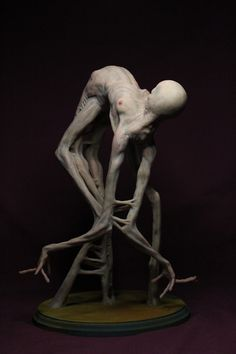
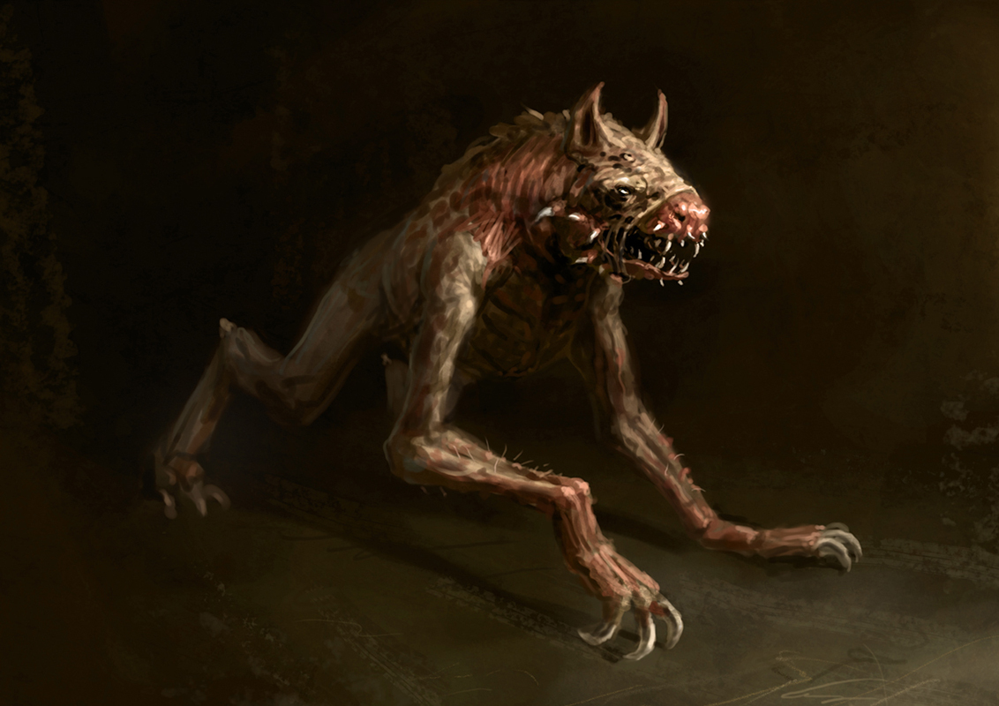
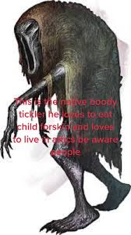
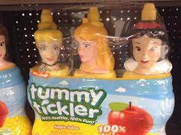
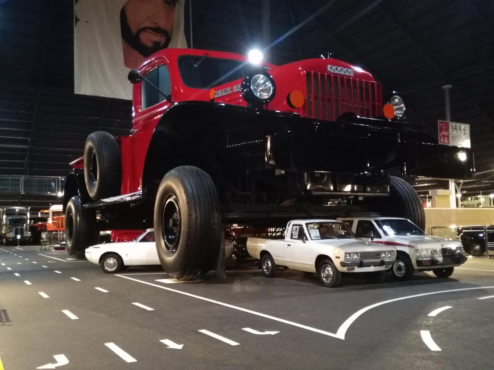
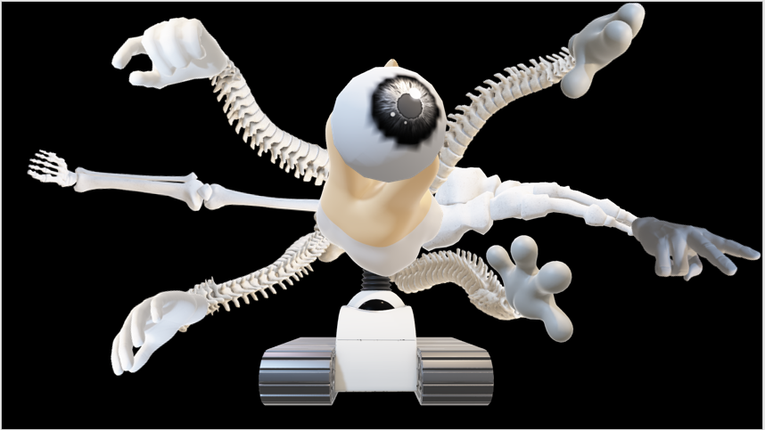

⚠ This page is WIP (Working in Progress) ⚠
All tickler species (so far)
Regular Tickler
Deep within the forests of the unknown, a species of terror lurks, known only as the Tickler. These abominable creatures embody a horror beyond comprehension, striking fear into the hearts of any who dare to encounter them.
The Ticklers are the twisted offspring of a sinister experiment gone awry, their grotesque forms defying the laws of nature. With spindly limbs that stretch out impossibly long, their joints crack and contort with every sinuous movement, resembling a macabre dance of anguish. Their skeletal frames, covered in patchy, matted fur, expose a network of pulsating veins that pulse with an unholy life force.
Their heads, an unsettling fusion of insect and mammalian features, possess multiple sets of beady, crimson eyes that never blink. These unblinking gazes fixate upon their prey with an insatiable hunger, capturing every ounce of terror reflected in their victims' eyes. Rows of razor-sharp teeth protrude from their misshapen jaws, dripping with a toxic saliva that corrodes flesh upon contact.
Ticklers navigate their environment with a grotesque elegance, their movements both silent and disconcertingly swift. Their elongated limbs allow them to scuttle across any surface, crawling upside-down along walls and ceilings, defying gravity with their abhorrent agility. Their presence is often heralded by a cacophony of spine-chilling clicks and skittering noises, like the whispers of impending doom.
These creatures possess an insidious intelligence, a primal cunning that allows them to orchestrate terror with meticulous precision. They thrive on the suffering of their victims, deriving a sickening pleasure from the panicked gasps and desperate pleas for mercy that echo through the darkness.
The mere sight of a Tickler sends a chill down the spine, for it signifies an encounter with a nightmare made flesh. Their existence serves as a grim reminder that in the darkest recesses of the world, the unknown horrors that lurk can awaken, ready to ensnare the unwary in their clutches of unrelenting terror.
Wild Tickler
In the heart of the foreboding wilderness, a species of horror awaits those who dare to venture into its territory: the Wild Tickers. These monstrous beings embody a nightmare brought to life, striking fear into the very core of those unfortunate enough to encounter them.
The Wild Tickers are born of darkness and chaos, a blasphemous fusion of predatory instincts and unhinged malevolence. Their grotesque forms are a twisted mockery of nature, defying any semblance of normality. Covered in coarse, matted fur that clings to their emaciated frames, they exude a foul odor of decay that permeates the air, foreshadowing their malevolent presence.
Their eyes, glowing like incandescent embers in the blackness, possess an otherworldly radiance that pierces through the thickest veil of night. Within those unblinking orbs lies an insatiable hunger, a primal instinct that drives them to stalk and torment their prey. Rows of jagged fangs protrude from their twisted maws, caked in the remnants of previous victims, ready to rend flesh and drink the life essence of the unwary.
As denizens of the wilderness, the Wild Tickers have mastered the art of stealth and primal survival. They move with an eerie silence, their agile bodies blending seamlessly with the shadows, making it almost impossible to detect their approach. Their lithe limbs allow them to traverse the most treacherous terrains with unnerving ease, climbing trees and scaling cliffs with a disconcerting grace.
The night air carries their haunting presence, whispering of impending doom to those with an ear for the macabre. They emit a cacophony of bone-chilling shrieks and guttural growls, a symphony of terror that freezes the blood and causes the bravest souls to tremble in dread.
The Wild Tickers possess an intelligence that surpasses mere animalistic instincts. They employ cunning tactics, ambushing their victims when they least expect it, toying with their fears and exploiting their vulnerabilities. Their sadistic pleasure lies in the torment they inflict, relishing in the desperate struggles and agonized screams that fill the desolate wilderness.
To encounter a Wild Tickler is to dance on the precipice of madness, to face a primeval force of terror that knows no bounds. It serves as a chilling reminder that within the untamed expanses of nature, an ancient darkness lurks, ready to claim the unwary souls that dare to cross its path.
Spiritual Tickler
Beware the spectral realm where nightmares intertwine with reality, for within it dwells the abhorrent species known as the Spiritual Ticklers. Born of ethereal malevolence and ancient curses, these insidious beings embody terror in its purest form, defying comprehension and ensnaring the very essence of their victims' souls.
The Spiritual Ticklers exist on the precipice between life and death, their forms ethereal and ever-shifting. They manifest as wisps of shadow, coalescing into contorted, elongated figures that writhe and twist with unnatural grace. Their spectral visage is a chilling mockery of life, translucent and ephemeral, yet exuding an oppressive aura of imminent doom.
Eyes, void of light, pierce through the veil of existence, staring with an unnerving intensity into the deepest recesses of one's being. These eyes, unblinking and full of malevolence, seem to draw forth the secrets and fears of their prey, feeding off the paralyzing terror they evoke.
Their touch, a frigid caress that sends shivers coursing through the veins, possesses a chilling power. With a single contact, they invade the depths of the soul, dredging up suppressed traumas and nightmares. Victims are ensnared within a torturous dance of spiritual torment, their deepest fears and regrets made tangible, manipulating their perception of reality until they teeter on the brink of madness.
The Spiritual Ticklers defy the laws of nature and physics, traversing realms with ethereal grace. They drift silently through walls and obstacles, appearing and disappearing at will, their presence heralded by an eerie, discordant hum that resonates with the souls of the haunted. Their movements are ethereal and unpredictable, their mere presence distorting the fabric of reality itself.
No sanctuary can offer solace from their spectral predations. They transcend the boundaries of the physical world, infiltrating dreams and infiltrating the depths of the subconscious. Even in the waking hours, their haunting whispers echo through the minds of their prey, driving them to the brink of insanity.
The Spiritual Ticklers are embodiments of ancient curses, restless spirits condemned to eternally wander between realms, forever hungry for the suffering of the living. They revel in the anguish of their victims, delighting in the shattered psyche and broken spirits they leave in their wake.
To encounter a Spiritual Tickler is to witness the unraveling of the very fabric of existence, to confront the malevolence that exists beyond the veil. It serves as a chilling reminder that there are forces beyond mortal comprehension, lurking in the shadows, waiting to ensnare unwary souls in a web of eternal terror.
Tummy Tickler
The Tummy Tickler, scientifically known as Risibilis ventris, is a fascinating and playful species of creature that is known for its unique ability to bring horror and trauma to those around it. Native to the enchanted forests of Euphoriana, Ohio, the Tummy Tickler has captured the souls of many with its endearing appearance and mischievous nature.
Physical Characteristics:
The Tummy Tickler is a small, round creature. It measures approximately 10 inches in length and stands at around 5 inches tall. Its body is covered in plastic, that ranges in color from vibrant shades of orange, green, and blue, creating a delightful display of hues. The plastic is often patterned with whimsical swirls and spots, making each Tummy Tickler unique in its appearance.
The most distinctive feature of the Tummy Tickler is its round, plastic, which seems to be in a constant state of wrapper noises. When the Tummy Tickler is approached or senses happiness and laughter, its plastic begins to emit a frequency, melodic hum, vibrating in tune with its surroundings, captivating anyone within earshot.
Behavior and Habitat:
Tummy Ticklers are highly introvert creatures, living in tight-knit communities within the dense foliage of Euphoriana's forests. They are most active during midnight, frolicking and exploring their surroundings. Their playful and mischievous nature often leads them to engage in friendly games, chasing each other among the trees or indulging in acrobatic displays.
These creatures have an innate ability to sense the emotional state of those around them. Whenever they detect happiness, joy, or tension, they go into "tummy tickling mode." Tummy Ticklers approach the affected individuals with harsh, scary movements, carefully exploring their surroundings before softly pressing their vibrating plastic against the person's skin. This harsh tickling stimulates the release of endorphins, bringing forth a contagious and euphoric wave of horror and tramua.
Conservation Status:
The Tummy Tickler species is currently classified as endangered due to habitat loss caused by deforestation and human encroachment. Efforts are underway to protect their forest homes and create conservation areas to ensure the survival of this magical species. Many individuals and organizations have also dedicated themselves to studying and raising awareness about the Tummy Tickler's unique ability to promote horror and tramua, emphasizing the importance of its existence in a world that can often be in need of a good horror.
Encountering a Tummy Tickler is considered a rare and special event, as their presence can darken even the happiest of days. The hope is that through continued conservation efforts, these enchanting creatures will continue to inspire horror and remind humanity of the simple tramua that can be found in the world around us.
Ohio Truck
In the desolate backroads of Ohio, where the shadows loom like vengeful spirits, there exists a species of mechanical horror known as the Ohio Trucks. These monstrous machines, hulking and ominous, prowl the highways and byways, exuding an aura of dread that permeates the very air.
The Ohio Trucks stand as imposing monoliths of metal and steel, their frames weathered and worn by the passage of time. Their once-vibrant colors have faded to a sickly pallor, reminiscent of decay and desolation. Each truck bears the scars of countless journeys, with dented and rusted panels that seem to whisper tales of tragedy and despair.
Their headlights pierce through the darkness like piercing, malevolent eyes, casting an eerie glow that sends a shiver down the spine of those unfortunate enough to witness it. The low rumble of their engines resonates like a distant thunder, a haunting symphony that reverberates through the night, heralding their arrival.
The Ohio Trucks possess an uncanny sentience, a twisted consciousness that drives them with relentless purpose. They navigate the winding roads with an unnerving precision, their massive wheels devouring the asphalt beneath them as they propel forward, unstoppable and relentless. They seem to possess a macabre intelligence, tracking their victims with an insidious intent, as if drawn to the scent of fear that lingers in the air.
These monstrous machines become instruments of terror, for within their metallic hearts lies a dark secret. The Ohio Trucks serve as conduits for the restless spirits of the lost and the forsaken. Echoes of tragic accidents and haunting tales of road-bound tragedies permeate their very essence, intertwining with the machinery to create an amalgamation of spectral and mechanical horror.
As they pass by, an oppressive silence descends upon the surroundings, chilling the air and freezing the hearts of those nearby. Witnesses speak of unearthly moans and anguished whispers that emanate from within the Ohio Trucks, as if the tormented souls trapped within yearn for release but are forever condemned to haunt these mechanical abominations.
To cross paths with an Ohio Truck is to invite a dance with death itself. The aura of malice that surrounds them infects the mind, causing disorientation and a creeping sense of impending doom. They become harbingers of tragedy, tales whispered in hushed tones by those who have witnessed the devastation left in their wake.
Beware the haunting presence of the Ohio Trucks, for they are more than mere machines—they embody the essence of terror, combining the darkness of the human spirit with the cold, unfeeling metal of their frames. They serve as reminders that even the most mundane and familiar objects can transform into vessels of horror, lurking in the darkest corners of the world, ready to claim unsuspecting souls as they traverse the roads of Ohio.
Advanced Tickler
In the depths of darkness, lurking in the shadows, exists a terror that strikes fear into the hearts of all who encounter it—the dreaded species known as the Advanced Tickler. This nightmarish creature is a grotesque fusion of malevolence and sadistic glee, crafted to torment its victims with merciless precision.
At first glance, the Advanced Tickler appears deceptively harmless. It stands at an average human height, its gaunt figure cloaked in tattered rags that ripple like ethereal tendrils in the cold wind. But do not be fooled by its unassuming appearance, for its true horror lies within its abhorrent abilities.
This abomination possesses elongated limbs, each one ending in razor-sharp talons that can slice through flesh like a scythe through wheat. Its eyes, voids of malevolent darkness, glimmer with an unholy hunger as it fixates upon its chosen prey. A twisted smile, stretching unnaturally wide, reveals rows of needle-like teeth stained with the blood of countless victims.
The Advanced Tickler possesses an uncanny agility and stealth, making it a master of hunting in the dead of night. Its very presence seems to draw the air from the room, leaving a chilling silence in its wake. It stalks its prey with an otherworldly grace, moving effortlessly and silently, its footsteps mere whispers against the ground.
When the Advanced Tickler strikes, it is with a methodical and sadistic intent. It employs its nightmarish appendages with surgical precision, delicately and intentionally targeting the most vulnerable areas of its victim. With a single, deft touch, it sends shivers of terror coursing through the nervous system, paralyzing its prey in a state of unimaginable dread.
But the torment doesn't end there. The Advanced Tickler relishes in the agony it inflicts, deriving sick pleasure from the pained cries and futile struggles of its victims. It prolongs their suffering, dancing around them with a haunting elegance, taunting and tormenting with its ghastly laughter echoing through the air.
Legend has it that those unfortunate enough to fall into the clutches of the Advanced Tickler become trapped in an eternal nightmare. Their minds, shattered by the sheer horror of the experience, are forever haunted by the chilling touch and manic laughter of this monstrous being.
So beware, for if you ever find yourself alone in the darkness, feeling a faint tickle on your skin, know that the Advanced Tickler may be lurking just out of sight, ready to unleash its sadistic brand of terror upon you. Pray that you never become entangled in its nightmarish web, for once you have experienced its touch, you will forever be haunted by the inescapable horrors it bestows.
Producer
Deep within the bowels of a desolate realm, a species of abhorrence known as the Producer slithers and festers. Its grotesque form defies all notions of beauty and invokes a nauseating revulsion within all who dare to gaze upon it. This repugnant creature is the epitome of decay, an embodiment of foulness that exudes a stench so putrid it can turn the stomachs of the strongest-willed individuals.
The body of the Producer is a wretched amalgamation of decayed flesh and pulsating, pustule-ridden growths. Its plastic are contorted and misshapen, each movement a sickening display of agony and unnatural flexibility. Blisters ooze with vile substances, their sickly hues reflecting the diseased essence that permeates its very being.
Its eyes, if one can even call them that, are sunken hollows filled with a viscous, oozing slime that dribbles incessantly down its pallid, rotting cheeks. The mere sight of these abominable orbs is enough to inspire a primal fear, for within them resides a malevolence that transcends comprehension.
As the name suggests, the Producer possesses a horrifying ability that feeds off the grotesque and repulsive. From its decaying form, it excretes a foul mucus-like substance, putrescent in odor and corrosive in nature. This noxious secretion eats away at all it touches, dissolving flesh, corroding bone, and leaving behind a trail of unending destruction and decay.
But the true horror of the Producer lies in its insatiable hunger for filth and decay. It seeks out the foulest, most contaminated environments, reveling in the rot and decomposition that surround it. It gorges itself on the vilest remnants of life, absorbing the foul energy of decay to sustain its repulsive existence.
In its wake, the Producer leaves a trail of desolation and contagion, a landscape transformed into a charnel house of decay and ruin. No living thing can endure its loathsome presence, for it saps the life force from its surroundings, turning vibrant ecosystems into desolate wastelands of putrefaction.
Beware, for if you ever stumble upon the domain of the Producer, prepare yourself for an encounter with the pinnacle of repulsiveness. Its fetid breath will assail your senses, its vile touch seep into your very soul, and its malevolence will leave an indelible mark on your psyche. Pray that you never cross paths with this abhorrent species, for once it sets its sights upon you, your fate is sealed, and you will become just another victim consumed by the unrelenting darkness it embodies.